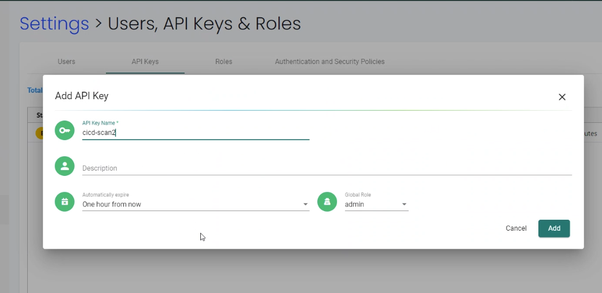
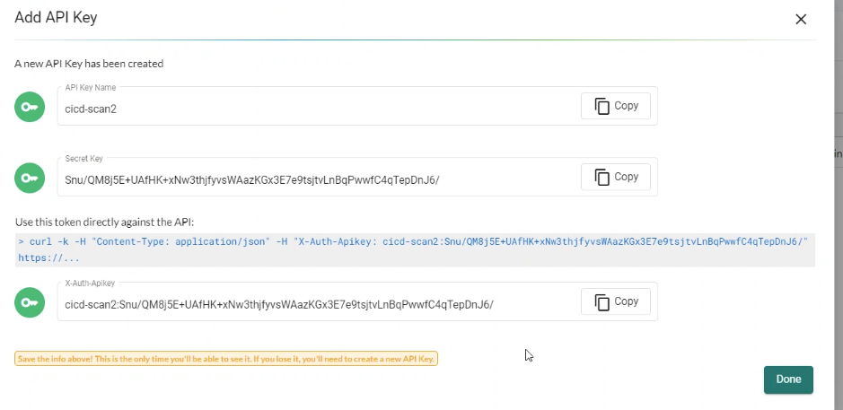
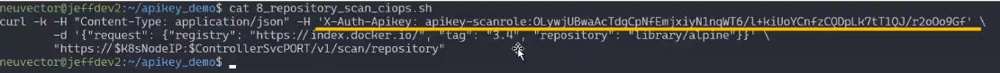

REST API und Automatisierung
SUSE® Security Automatisierung
Es gibt viele Automatisierungsfunktionen in SUSE® Security, um den gesamten CI/CD-Workflow zu unterstützen, einschließlich:
-
Jenkins-Plugin für automatisiertes Scannen während des Builds
-
Registry-Scanning zur Automatisierung der Repository-Überwachung
-
Admission Control-Richtlinien, um unautorisierte Implementierungen zu erlauben oder abzulehnen
-
CIS-Benchmarks, die automatisch auf Hosts ausgeführt werden
-
Helm-Chart auf GitHub für automatisierte Implementierung auf Kubernetes
-
Antwortregeln zur Automatisierung von Antworten auf Sicherheitsereignisse
-
REST API zur Automatisierung jeder SUSE® Security Funktion
REST-API
Die SUSE® Security Lösung kann über die REST API verwaltet werden. Im Folgenden sind gängige Beispiele für Automatisierung mit der REST API aufgeführt. Das REST API YAML-Dokument wird am besten im Swagger 2.0 Viewer angezeigt. Die REST API-Dokumentation befindet sich unten in einer YAML-Datei, die am besten in einem Reader wie swagger.io angezeigt wird.
Das neueste Update finden Sie hier. Auch im SUSE® Security GitHub-Quellcode Repository. Die apis.yaml vom Haupt-Repository kann nicht veröffentlichte Funktionen enthalten. Es wird empfohlen, den entsprechenden veröffentlichten Quellcode herunterzuladen und die apis.yaml aus dem controller/api-Ordner zu extrahieren.
|
Wenn Sie REST-API-Aufrufe mit Benutzername/Passwort tätigen, stellen Sie bitte sicher, dass Sie einen DELETE-Aufruf an /v1/auth durchführen, wenn Sie fertig sind. Es gibt maximal 32 gleichzeitige Sitzungen für jeden Benutzer. Wenn dies überschritten wird, tritt ein Authentifizierungsfehler auf. |
SUSE® Security unterstützt auch Antwortregeln, um häufige Antworten auf Sicherheitsereignisse oder erkannte Schwachstellen zu automatisieren. Bitte siehe den Abschnitt Sicherheitsrichtlinie → Antwortregeln für weitere Details.
REST-API in Kubernetes exponieren
Um die REST-API für den Zugriff von außerhalb des Kubernetes-Clusters freizugeben, aktivieren Sie den Port 10443.
apiVersion: v1
kind: Service
metadata:
name: neuvector-svc-controller-api
namespace: neuvector
spec:
ports:
- port: 10443
name: controller-api
protocol: TCP
type: LoadBalancer
selector:
app: neuvector-controller-pod|
|
|
Wenn Sie den Typ LoadBalancer verwenden, setzen Sie die controllerIP in den folgenden Beispielen auf die externe IP oder URL für den Loadbalancer. |
Authentifizierung für REST-API
Die REST-API unterstützt zwei Arten der Authentifizierung: Benutzername/Passwort und Token. Beide können in den Einstellungen → Benutzer, API-Schlüssel und Rollen konfiguriert und mit Standard- oder benutzerdefinierten Rollen verknüpft werden, um die Zugriffsrechte zu beschränken. Die folgenden Beispiele zeigen die Authentifizierung auf Basis von Benutzername/Passwort, bei der zuerst ein Token erstellt wird, das dann in nachfolgenden REST-API-Aufrufen verwendet wird. Wenn ein Token verwendet wird, kann es direkt in jedem REST-API-Aufruf verwendet werden. Hinweis: Verbindungen auf Basis des Benutzernamens haben eine begrenzte Anzahl gleichzeitiger Sitzungen, daher ist es wichtig, das Benutzertoken wie unten gezeigt zu löschen, wenn Sie fertig sind. Token-basierte Authentifizierung hat keine Begrenzung, läuft jedoch gemäß der beim Erstellen ausgewählten Zeitgrenze ab.
Für die tokenbasierte Authentifizierung siehe die folgenden Screenshots und Beispielaufruf. Stellen Sie sicher, dass Sie das Geheimnis und das Token nach der Erstellung kopieren, da es keine Möglichkeit gibt, dies nach dem Schließen des Bildschirms wiederherzustellen.



Starten Sie einen Schwachstellenscan von einem Skript.
SUSE® Security kann automatisch ausgelöst werden, um ein Bild auf Schwachstellen zu scannen. Dies kann durch die Konfiguration eines zu überwachenden Repositorys, die Verwendung des SUSE® Security Jenkins-Plugins oder die Verwendung der REST-API erfolgen. Bitte sehen Sie sich den Abschnitt über Scannen & Compliance für weitere Details an.
Das folgende Skript zeigt, wie man den Container remote zieht, ihn ausführt und scannt. Es kann von einer Jenkins-Aufgabe (Shell) oder einem beliebigen CI/CD-Tool ausgelöst werden. Ein JSON-Parser-Tool (jq) wird ebenfalls verwendet.
Stellen Sie sicher, dass Sie die IP-Adresse des Controllers im Skript eingeben und den Namen des Container-Images auf das ändern, das Sie scannen möchten. Aktualisieren Sie auch die Felder für Benutzername/Passwort.
Klicken Sie hier für Details
_curCase_=`echo $0 | awk -F"." '{print $(NF-1)}' | awk -F"/" '{print $NF}'`
_DESC_="able to scan ubuntu:16.04 image"
_ERRCODE_=0
_ERRTYPE_=1
_RESULT_="pass"
# please remember to specify the controller ip address here
_controllerIP_="<your_controller_ip>"
_controllerRESTAPIPort_="10443"
_neuvectorUsername_="admin"
_neuvectorPassword_="admin"
_registryURL_=""
_registryUsername_=""
_registryPassword_=""
_repository_="alpine"
_tag_="latest"
curl -k -H "Content-Type: application/json" -d '{"password": {"username": "'$_neuvectorUsername_'", "password": "'$_neuvectorPassword_'"}}' "https://$_controllerIP_:$_controllerRESTAPIPort_/v1/auth" > /dev/null 2>&1 > token.json
_TOKEN_=`cat token.json | jq -r '.token.token'`
echo `date +%Y%m%d_%H%M%S` scanning an image ...
curl -k -H "Content-Type: application/json" -H "X-Auth-Token: $_TOKEN_" -d '{"request": {"registry": "'$_registryURL_'", "username": "'$_registryUsername_'", "password": "'$_registryPassword_'", "repository": "'$_repository_'", "tag": "'$_tag_'"}}' "https://$_controllerIP_:$_controllerRESTAPIPort_/v1/scan/repository" > /dev/null 2>&1 > scan_repository.json
while [ `wc -c < scan_repository.json` = "0" ]; do
echo `date +%Y%m%d_%H%M%S` scanning is still in progress ...
sleep 5
curl -k -H "Content-Type: application/json" -H "X-Auth-Token: $_TOKEN_" -d '{"request": {"registry": "'$_registryURL_'", "username": "'$_registryUsername_'", "password": "'$_registryPassword_'", "repository": "'$_repository_'", "tag": "'$_tag_'"}}' "https://$_controllerIP_:$_controllerRESTAPIPort_/v1/scan/repository" > /dev/null 2>&1 > scan_repository.json
done
echo `date +%Y%m%d_%H%M%S` log out
curl -k -X 'DELETE' -H "Content-Type: application/json" -H "X-Auth-Token: $_TOKEN_" "https://$_controllerIP_:$_controllerRESTAPIPort_/v1/auth" > /dev/null 2>&1
cat scan_repository.json | jq .
rm *.json
echo `date +%Y%m%d_%H%M%S` [$_curCase_] $_DESC_: $_RESULT_-$_ERRCODE_|
Möglicherweise müssen Sie jq installieren. |
Für Kubernetes-basierte Implementierungen können Sie die Controller-IP wie folgt festlegen:
_podNAME_=`kubectl get pod -n neuvector -o wide | grep "allinone\|controller" | head -n 1 | awk '{print $1}'`
_controllerIP_=`kubectl exec $_podNAME_ -n neuvector -- consul info | grep leader_addr | awk -F":| " '{print $3}'`|
Bei einer Implementierung mit mehreren Controllern müssen die Anfragen an eine einzelne Controller-IP gesendet werden, damit mehrere Anfragen zum Status von lang laufenden Bildscans an den Controller gehen, der den Scan durchführt. |
Für das Scannen lokal anstelle in einem Repository:
curl -k -H "Content-Type: application/json" -H "X-Auth-Token: $_TOKEN_" -d '{"request": {"tag": "3.4", "repository": "nvlab/alpine", "scan_layers": true}}' "https://$_controllerIP_:443/v1/scan/repository"Beispielausgabe:
Klicken Sie hier für Details
{
"report": {
"image_id": "c7fc7faf8c28d48044763609508ebeebd912ad6141a722386b89d044b62e4d45",
"registry": "",
"repository": "nvlab/alpine",
"tag": "3.4",
"digest": "sha256:2441496fb9f0d938e5f8b27aba5cc367b24078225ceed82a9a5e67f0d6738c80",
"base_os": "alpine:3.4.6",
"cvedb_version": "1.568",
"vulnerabilities": [
{
"name": "CVE-2018-0732",
"score": 5,
"severity": "Medium",
"vectors": "AV:N/AC:L/Au:N/C:N/I:N/A:P",
"description": "During key agreement in a TLS handshake using a DH(E) based ciphersuite a malicious server can send a very large prime value to the client. This will cause the client to spend an unreasonably long period of time generating a key for this prime resulting in a hang until the client has finished. This could be exploited in a Denial Of Service attack. Fixed in OpenSSL 1.1.0i-dev (Affected 1.1.0-1.1.0h). Fixed in OpenSSL 1.0.2p-dev (Affected 1.0.2-1.0.2o).",
"package_name": "openssl",
"package_version": "1.0.2n-r0",
"fixed_version": "1.0.2o-r1",
"link": "https://cve.mitre.org/cgi-bin/cvename.cgi?name=CVE-2018-0732",
"score_v3": 7.5,
"vectors_v3": "CVSS:3.0/AV:N/AC:L/PR:N/UI:N/S:U/C:N/I:N/A:H"
},
...
],
"layers": [
{
"digest": "c68318b6ae6a2234d575c4b6b33844e3e937cf608c988a0263345c1abc236c14",
"cmds": "/bin/sh",
"vulnerabilities": [
{
"name": "CVE-2018-0732",
"score": 5,
"severity": "Medium",
"vectors": "AV:N/AC:L/Au:N/C:N/I:N/A:P",
"description": "During key agreement in a TLS handshake using a DH(E) based ciphersuite a malicious server can send a very large prime value to the client. This will cause the client to spend an unreasonably long period of time generating a key for this prime resulting in a hang until the client has finished. This could be exploited in a Denial Of Service attack. Fixed in OpenSSL 1.1.0i-dev (Affected 1.1.0-1.1.0h). Fixed in OpenSSL 1.0.2p-dev (Affected 1.0.2-1.0.2o).",
"package_name": "openssl",
"package_version": "1.0.2n-r0",
"fixed_version": "1.0.2o-r1",
"link": "https://cve.mitre.org/cgi-bin/cvename.cgi?name=CVE-2018-0732",
"score_v3": 7.5,
"vectors_v3": "CVSS:3.0/AV:N/AC:L/PR:N/UI:N/S:U/C:N/I:N/A:H"
},
...
],
"size": 5060096
}
]
}
}Richtlinienregeln automatisch erstellen
Um eine neue Regel im SUSE® Security Richtlinien-Controller zu erstellen, müssen die Gruppen für die Felder FROM und TO zuerst existieren. Das folgende Beispiel erstellt eine neue Gruppe basierend auf dem Container-Label nv-service-type=data und eine weitere Gruppe für das Label nv-service-type=website. Eine Regel wird dann erstellt, um den Verkehr vom Wordpress-Container zum MySQL-Container nur unter Verwendung des MySQL-Protokolls zuzulassen.
Stellen Sie sicher, dass Sie den Benutzernamen und das Passwort für den Zugriff auf den Controller aktualisieren.
#!/bin/sh
TOKEN_JSON=$(curl -k -H "Content-Type: application/json" -d '{"password": {"username": "admin", "password": "admin"}}' "https://`docker inspect neuvector.allinone | jq -r '.[0].NetworkSettings.IPAddress'`:10443/v1/auth")
_TOKEN_=`echo $TOKEN_JSON | jq -r '.token.token'`
curl -k -H "Content-Type: application/json" -H "X-Auth-Token: $_TOKEN_" -d '{"config": {"name": "mydb", "criteria": [{"value": "data", "key": "nv.service.type", "op": "="}]}}' "https://`docker inspect neuvector.allinone | jq -r '.[0].NetworkSettings.IPAddress'`:10443/v1/group"
curl -k -H "Content-Type: application/json" -H "X-Auth-Token: $_TOKEN_" -d '{"config": {"name": "mywp", "criteria": [{"value": "website", "key": "nv.service.type", "op": "="}]}}' "https://`docker inspect neuvector.allinone | jq -r '.[0].NetworkSettings.IPAddress'`:10443/v1/group"
curl -k -X "PATCH" -H "Content-Type: application/json" -H "X-Auth-Token: $_TOKEN_" -d '{"insert": {"rules": [{"comment": "Custom WP Rule", "from": "mywp", "applications": ["MYSQL"], "ports": "any", "to": "mydb", "action": "allow", "id": 0}], "after": 0}}' "https://`docker inspect neuvector.allinone | jq -r '.[0].NetworkSettings.IPAddress'`:10443/v1/policy/rule"
curl -k -X "DELETE" -H "Content-Type: application/json" -H "X-Auth-Token: $_TOKEN_" "https://`docker inspect neuvector.allinone | jq -r '.[0].NetworkSettings.IPAddress'`:10443/v1/auth"Wenn die Gruppen bereits in SUSE® Security existieren, kann die neue Regel erstellt werden, wobei die Schritte zur Erstellung der Gruppe übersprungen werden. Dieses Beispiel entfernt auch das Authentifizierungs-Token am Ende. Beachten Sie, dass eine Regel-ID-Nummer angegeben werden kann und SUSE® Security Regeln in numerischer Reihenfolge von niedrig nach hoch ausführt.
Export-/Import-Konfigurationsdatei
Hier sind Beispiele, um die SUSE® Security Konfigurationsdatei automatisch zu sichern. Sie können auswählen, ob Sie alle Konfigurationseinstellungen (Richtlinie, Benutzer, Einstellungen usw.) oder nur die Richtlinie exportieren möchten.
|
Diese Beispiele werden nur als Beispiele bereitgestellt und werden nicht offiziell unterstützt, es sei denn, es wurde eine spezifische Unternehmensunterstützungsvereinbarung getroffen. |
Um alle Konfigurationen zu exportieren:
./config.py export -u admin -w admin -s $_controllerIP_ -p $_controllerPort_ -f $_FILENAME_ # exporting the configuration with all settingsUm nur die Richtlinie zu exportieren:
./config.py export -u admin -w admin -s $_controllerIP_ -p $_controllerPort_ -f $_FILENAME_ --section policy # exporting the configuration with policy onlyUm die Datei zu importieren:
./config.py import -u admin -w admin -s $_controllerIP_ -p $_controllerPort_ -f $_FILENAME_ # importing the configurationBeispiel-Python-Dateien Enthält config.py, client.py und multipart.py. Beispiel-Dateien herunterladen: ImportExport. Bitte legen Sie alle drei Dateien in einen Ordner, um die obigen Befehle auszuführen. Möglicherweise müssen Sie einige Python-Module installieren, um das Skript auszuführen.
sudo pip install requests sixBenutzerpasswort festlegen oder ändern
Verwenden Sie die REST-API-Aufrufe zur Benutzerverwaltung.
curl -s -k -H 'Content-Type: application/json' -H 'X-Auth-Token: c64125decb31e6d3125da45cba0f5025' https://127.0.0.1:10443/v1/user/admin -X PATCH -d '{"config":{"fullname":"admin","password":"admin","new_password":"NEWPASS"}}'Packet Capture auf einem Container starten
Wenn ein Container verdächtiges Verhalten zeigt, starten Sie eine Paketaufzeichnung.
#!/bin/sh
TOKEN_JSON=$(curl _k _H "Content_Type: application/json" _d '{"password": {"username": "admin", "password": "admin"}}' "https://`docker inspect neuvector.allinone | jq _r '.[0].NetworkSettings.IPAddress'`:10443/v1/auth")
_TOKEN_=`echo $TOKEN_JSON | jq -r '.token.token'`
curl -k -H "Content-Type: application/json" -H "X-Auth-Token: $_TOKEN_" -d '{"sniffer":{"file_number":1,"filter":"port 1381"}}' "https://`docker inspect neuvector.allinone | jq -r '.[0].NetworkSettings.IPAddress'`:10443/v1/sniffer?f_workload=`docker inspect neuvector.allinone | jq -r .[0].Id`"Vergessen Sie nicht, die Sniffer-Sitzung nach einiger Zeit zu stoppen, damit sie nicht ewig läuft. Die Anzahl der zu rotierenden Dateien hat einen maximalen Wert von 50.
Überprüfen und Akzeptieren der EULA (neue Implementierungen)
Holen Sie sich das Authentifizierungs-Token wie oben beschrieben. Ersetzen Sie auch die Controller-IP-Adresse durch Ihre, wie erforderlich.
curl -s -k -H 'Content-Type: application/json' -H 'X-Auth-Token: $_TOKEN_' https://127.0.0.1:10443/v1/eula | jq .
{
"eula": {
"accepted":false
}
}EULA akzeptieren
curl -s -k -H 'Content-Type: application/json' -H 'X-Auth-Token: $_TOKEN_' -d '{"eula":{"accepted":true}}' https://127.0.0.1:10443/v1/eulaÜberprüfen Sie dann die EULA erneut.
Registry-Scanning konfigurieren
curl -k -H "Content-Type: application/json" -H "X-Auth-Token: $_TOKEN_" -d '{"request": {"registry": "https://registry.connect.redhat.com", "username": "username", "password": "password", "tag": "latest", "repository": "neuvector/enforcer"}}' "https://controller:port/v1/scan/repository"Aktivieren Sie die Paketaufzeichnung für alle Pods in einem Namespace
Klicken Sie hier für Details
#!/bin/bash
#set -x
hash curl 2>/dev/null || { echo >&2 "Required curl but it's not installed. Aborting."; exit 1; }
hash jq 2>/dev/null || { echo >&2 "Required jq but it's not installed. Aborting."; exit 1;}
script="$0"
usage() {
echo "Usage: $script -n [namespace] -d [pcap duration (seconds)] -l [https://nvserver:10443]" 1>&2;
exit 1;
}
while getopts ":n:d:l:h" opt; do
case $opt in
n)
NAMESPACE=$OPTARG
;;
d)
DURATION=$OPTARG
;;
l) URL="$OPTARG/v1"
;;
h)
usage
;;
\?)
echo "Invalid option, $OPTARG. Try -h for help." 1>&2
;;
:)
echo "Invalid option: $OPTARG requires an argument" 1>&2
esac
done
if [ ! "$NAMESPACE" ] || [ ! "$DURATION" ] || [ ! "$URL" ]
then
usage
exit 1
fi
count=0
for i in `kubectl -n $NAMESPACE get pods -o wide 2> /dev/null | tail -n +2 | awk '{print $1}' | sed 's|\(.*\)-.*|\1|' | uniq`;
do
CHOICE1[count]=$i
count=$count+1
done
if [ -z ${CHOICE1[0]} ]; then
echo "No pods found in $NAMESPACE."
exit 1
else
for i in "${!CHOICE1[@]}"
do
echo "$i : ${CHOICE1[$i]}"
done
read -p "Packet capture on which pod group? " -r
if [ -n $REPLY ]; then
POD_STRING=${CHOICE1[$REPLY]}
echo $POD_STRING " selected."
else
exit 1
fi
fi
sniffer_start() {
URI="/sniffer?f_workload=$1"
sniff_id=$(curl -ks --location --request POST ${URL}${URI} "${curlHeaders[@]}" --data-raw '{ "sniffer": { "file_number": 1, "filter": "" }}' | jq .result.id)
echo $sniff_id
}
sniffer_stop() {
URI="/sniffer/stop/${1}"
status_code=`curl -ks -w "%{http_code}" --location --request PATCH ${URL}${URI} "${curlHeaders[@]}"`
echo $status_code
}
sniffer_pcap_get() {
URI="/sniffer/${1}/pcap"
status_code=`curl -ks -w "%{http_code}" --location --request GET ${URL}${URI} "${curlHeaders[@]}" -o $1.pcap`
echo $status_code
}
sniffer_pcap_delete() {
URI="/sniffer/${1}"
status_code=`curl -ks -w "%{http_code}" --location --request DELETE ${URL}${URI} "${curlHeaders[@]}"`
echo $status_code
}
show_menu() {
count=0
for i in "Exit script" "Start packet capture for $DURATION seconds" "Download packet capture from pods" "Delete packet capture from pods";
do
CHOICE2[count]=$i
count=$count+1
done
echo
echo "Selections:"
for i in "${!CHOICE2[@]}"
do
echo "$i : ${CHOICE2[$i]}"
done
}
get_token() {
read -p "Enter {product-name} Username: " USER
if [ -z $USER ]; then
echo "Blank username, exiting..."
exit 1
fi
read -s -p "Enter password: " PASS
if [ -z $PASS ]; then
echo
echo "Blank password, exiting..."
exit 1
fi
TOKEN=`curl -ks --location --request POST ${URL}/auth \
--header "accept: application/json" \
--header "Content-Type: application/json" \
--data-raw '{"password": {"username": "'$USER'", "password": "'$PASS'"}}'|jq .token.token`
echo $TOKEN
}
TOKEN=$(get_token)
while [ "$TOKEN" = "null" ]; do
echo
echo "Authenticating failed, retry."
TOKEN=$(get_token)
done
TOKEN=${TOKEN:1:${#TOKEN}-2}
echo
declare -a curlHeaders=('-H' "Content-Type: application/json" '-H' "X-Auth-Token: $TOKEN")
echo "Pulling worklods from $URL"
declare -a workloads="($(
curl -ks --location --request GET ${URL}/workload "${curlHeaders[@]}" \
| jq '.workloads[] | select(.display_name | startswith("'${POD_STRING}'"))| select(.domain=="'$NAMESPACE'" and .cap_sniff==true) | .display_name + "::" +.id' -r
))"
if [ ${#workloads[@]} -eq 0 ]; then
echo
echo "No pods is capable of packet capture. Only ethernet IP part of Kubernetes CIDR can packet capture."
exit 1
else
echo
echo "List of Pods to perform capture on."
echo "Pod Name : ID"
for pods in "${workloads[@]}" ; do
POD_NAME="${pods%%::*}"
POD_ID="${pods##*::}"
echo "$POD_NAME : $POD_ID"
done
fi
while :; do
show_menu
read -p "Choice? " -r
if [ -n $REPLY ]; then
case "$REPLY" in
0)
exit 0;
;;
1)
counter=0
declare -a sniffs;
for pods in "${workloads[@]}"; do
POD_ID="${pods##*::}"
sniff_id="$(sniffer_start $POD_ID)";
sniffs[$counter]=$sniff_id
counter=$((counter+1))
done
echo "Running pcap for ~$DURATION seconds.";
sleep $DURATION;
for sniff_id in "${sniffs[@]}"; do
sniff_id=${sniff_id:1:${#sniff_id}-2}
status="$(sniffer_stop $sniff_id)";
done
;;
2)
for sniff_id in "${sniffs[@]}"; do
sniff_id=${sniff_id:1:${#sniff_id}-2}
status="$(sniffer_pcap_get $sniff_id)";
done
;;
3)
for sniff_id in "${sniffs[@]}"; do
sniff_id=${sniff_id:1:${#sniff_id}-2}
status="$(sniffer_pcap_delete $sniff_id)";
done
;;
esac
else
exit 1
fi
doneContainerquarantäne aktivieren/deaktivieren
Der API-Aufruf zur Quarantäne erfolgt über PATCH an /v1/workload/:id mit folgendem Body. Die Arbeitslast-ID ist die Container-/Pod-ID.
--data-raw '{
"config": {
"quarantine": true,
"wire": "default",
"quarantine_reason": "violation"
}
}'Aktivieren Sie den Debugging-Modus für SUSE® Security Support
Setzen Sie das Zugriffstoken mit Ihrer IP, Benutzer, Passwort:
_controllerIP_="<your_controller_ip>"
_controllerRESTAPIPort_="10443"
_neuvectorUsername_="admin"
_neuvectorPassword_="admin"Holen Sie sich das Authentifizierungstoken
curl -k -H "Content-Type: application/json" -d '{"password": {"username": "'$_neuvectorUsername_'", "password": "'$_neuvectorPassword_'"}}' "https://$_controllerIP_:$_controllerRESTAPIPort_/v1/auth" > /dev/null 2>&1 > token.json
_TOKEN_=`cat token.json | jq -r '.token.token'`Aktivieren Sie den Debug-Modus
curl -X PATCH -k -H "Content-Type: application/json" -H "X-Auth-Token: $_TOKEN_" -d '{"config": {"controller_debug": ["cpath", "conn"]}}' "https://$_controllerIP_:$_controllerRESTAPIPort_/v1/system/config" > /dev/null 2>&1 > set_debug.json
#debug options - cpath, conn, mutex, scan, cluster , allDeaktivieren Sie das Debugging auf allen Controllern in einem Cluster
curl -X PATCH -k -H "Content-Type: application/json" -H "X-Auth-Token: $_TOKEN_" -d '{"config": {"controller_debug": []}}' "https://$_controllerIP_:$_controllerRESTAPIPort_/v1/system/config" > /dev/null 2>&1 > set_debug.jsonÜberprüfen Sie den Debug-Status des Controllers in einem Cluster
curl -k -H "Content-Type: application/json" -H "X-Auth-Token: $_TOKEN_" "https://$_controllerIP_:$_controllerRESTAPIPort_/v1/system/config" > /dev/null 2>&1 > system_setting.json
cat system_setting.json | jq .config.controller_debugAbmelden
echo `date +%Y%m%d_%H%M%S` log out curl -k -X 'DELETE' -H "Content-Type: application/json" -H "X-Auth-Token: $_TOKEN_" "https://$_controllerIP_:$_controllerRESTAPIPort_/v1/auth" > /dev/null 2>&1
Melden Sie, ob eine Schwachstelle in den Basisbildschichten vorhanden ist
Um CVEs im Basisbild zu identifizieren, wenn Sie die REST-API zum Scannen von Bildern verwenden, muss das Basisbild im API-Aufruf identifiziert werden, wie im folgenden Beispiel.
curl -k -H "Content-Type: application/json" -H "X-Auth-Token: $_TOKEN_" -d '{"request": {"registry": "https://registry.hub.docker.com/", "repository": "garricktam/debian", "tag": "latest", "scan_layers": false, "base_image": "2244...../nodejs:3.2......"}}' "https://$RESTURL/v1/scan/repository"
{noformat}Nutzungsbeschränkungen
Wenn das zu scannende Bild ein Remote-Bild ist, mit "registry" angegeben, muss das Basisbild ebenfalls ein Remote-Bild sein, und der Name muss mit http oder https beginnen. Wenn das zu scannende Bild ein lokales Bild ist, muss das Basisbild ebenfalls ein lokales Bild sein.
Beispiel:
{"request": {"repository": "neuvector/manager", "tag": "4.0.2", "scan_layers": true, "base_image": "alpine:3.12.0"}}
{"request": {"registry": "https://10.1.127.12:5000/", "repository": "neuvector/manager", "tag": "4.0.0", "scan_layers": true, "base_image": "https://registry.hub.docker.com/alpine:3.12.0"}}
{"request": {"repository": "neuvector/manager", "tag": "4.0.2", "scan_layers": true, "base_image": "10.1.127.12:5000/neuvector/manager:4.0.2”}}Holen Sie sich die CVE-Datenbankversion und das Datum
curl -k -H "Content-Type: application/json" -H "X-Auth-Token: $_TOKEN_" "https://127.0.0.1:10443/v1/scan/scanner"Ausgabe:
{
"scanners": [
{
"cvedb_create_time": "2020-07-07T10:34:04Z",
"cvedb_version": "1.950",
"id": "0f043705948557828ac1831ee596588a0d050950113117ddd19ecd604982f4d9",
"port": 18402,
"server": "127.0.0.1"
},
{
"cvedb_create_time": "2020-07-07T10:34:04Z",
"cvedb_version": "1.950",
"id": "9fa02c644d603f59331c95735158d137002d32a75ed1014326f5039f38d4d717",
"port": 18402,
"server": "192.168.9.95"
}
]
}Verwalten von Föderationen für Master- und Remote- (Arbeits-)Cluster
Im Allgemeinen kann das Auflisten von Föderationsmitgliedern ein GET an den folgenden Endpunkt verwenden (siehe Beispiele für spezifische Syntax):
https://neuvector-svc-controller.neuvector:10443/v1/fed/member
Für Informationen zur Automatisierung der Föderation über ConfigMap siehe die Dokumentation Beispiele für föderierte ConfigMaps.
Ausgewählte API’s zur Verwaltung der Föderation:
Klicken Sie hier für Details
_masterClusterIP_=$1
_workerClusterIP_=$2
# this is used if one of clusters is going to be kicked by master cluster
_CLUSTER_name_=$3
echo `date +%Y%m%d_%H%M%S` [$_curCase_] login as default admin user
curl -k -H "Content-Type: application/json" -d '{"password": {"username": "admin", "password": "admin"}}' "https://$_masterClusterIP_:10443/v1/auth" > /dev/null 2>&1 > ./$_LOGFOLDER_/token.json
_TOKEN_M_=`cat ./$_LOGFOLDER_/token.json | jq -r '.token.token'`
echo `date +%Y%m%d_%H%M%S` [$_curCase_] promote to master cluster
curl -k -H "Content-Type: application/json" -H "X-Auth-Token: $_TOKEN_M_" -d '{"master_rest_info": {"port": 11443, "server": "'$_masterClusterIP_'"}, "name": "master"}' "https://$_masterClusterIP_:10443/v1/fed/promote" > /dev/null 2>&1
echo `date +%Y%m%d_%H%M%S` [$_curCase_] idle 6 seconds for logon session timeout
sleep 6
echo `date +%Y%m%d_%H%M%S` [$_curCase_] login as default admin user on master cluster
curl -k -H "Content-Type: application/json" -d '{"password": {"username": "admin", "password": "admin"}}' "https://$_masterClusterIP_:10443/v1/auth" > /dev/null 2>&1 > ./token.json
_TOKEN_M_=`cat ./token.json | jq -r '.token.token'`
echo `date +%Y%m%d_%H%M%S` [$_curCase_] checking fed join_token on master cluster
curl -k -H "Content-Type: application/json" -H "X-Auth-Token: $_TOKEN_M_" "https://$_masterClusterIP_:10443/v1/fed/join_token" > /dev/null 2>&1 > ./join_token.json
cat ./join_token.json | jq -c .
_JOIN_TOKEN_=`cat ./join_token.json | jq -r '.join_token'`
echo `date +%Y%m%d_%H%M%S` [$_curCase_] login as default admin user on worker cluster
curl -k -H "Content-Type: application/json" -d '{"password": {"username": "admin", "password": "admin"}}' "https://$_workerClusterIP_:10443/v1/auth" > /dev/null 2>&1 > ./token.json
_TOKEN_W_=`cat ./token.json | jq -r '.token.token'`
echo `date +%Y%m%d_%H%M%S` [$_curCase_] joining the cluster
curl -k -H "Content-Type: application/json" -H "X-Auth-Token: $_TOKEN_W_" -d '{"join_token": "'$_JOIN_TOKEN_'", "name": "worker", "joint_rest_info": {"port": 10443, "server": "'$_workerClusterIP_'"}}' "https://$_workerClusterIP_:10443/v1/fed/join" > /dev/null 2>&1
echo `date +%Y%m%d_%H%M%S` [$_curCase_] idle 9 seconds for events
sleep 9
########## whenever there is a change on cluster such as a cluster is kicked/left/joined, run this to check the status ############
echo `date +%Y%m%d_%H%M%S` [$_curCase_] checking fed member on master cluster
curl -k -H "Content-Type: application/json" -H "X-Auth-Token: $_TOKEN_M_" "https://$_masterClusterIP_:10443/v1/fed/member" > /dev/null 2>&1 > ./fedMember.json
cat ./fedMember.json | jq -c .
echo `date +%Y%m%d_%H%M%S` [$_curCase_] checking fed member on worker cluster
curl -k -H "Content-Type: application/json" -H "X-Auth-Token: $_TOKEN_W_" "https://$_workerClusterIP_:10443/v1/fed/member" > /dev/null 2>&1 > ./fedMember.json
cat ./fedMember.json | jq -c .
_CLUSTER_id_=`cat ./fedMember.json | jq -r --arg _CLUSTER_name_ "$_CLUSTER_name_" '.joint_clusters[] | select(.name == $_CLUSTER_name_).id'`
###################################################################################################################################
########## for ur information to leave or kick the cluster ############
echo `date +%Y%m%d_%H%M%S` [$_curCase_] requesting to leave on worker cluster
curl -k -H "Content-Type: application/json" -H "X-Auth-Token: $_TOKEN_W_" -d '{"force": false}' "https://$_workerClusterIP_:10443/v1/fed/leave" > /dev/null 2>&1
echo `date +%Y%m%d_%H%M%S` [$_curCase_] idle 9 seconds for events
sleep 9
echo `date +%Y%m%d_%H%M%S` [$_curCase_] requesting to kick on master cluster, $_CLUSTER_id_
curl -k -X "DELETE" -H "Content-Type: application/json" -H "X-Auth-Token: $_TOKEN_M_" "https://$_masterClusterIP_:10443/v1/fed/cluster/$_CLUSTER_id_" > /dev/null 2>&1
echo `date +%Y%m%d_%H%M%S` [$_curCase_] idle 9 seconds for events
sleep 9
#######################################################################